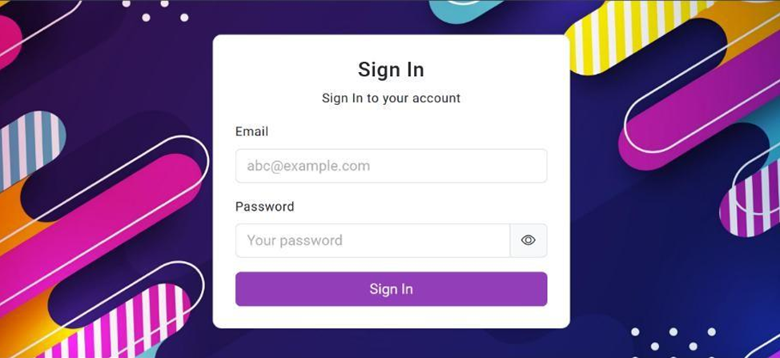
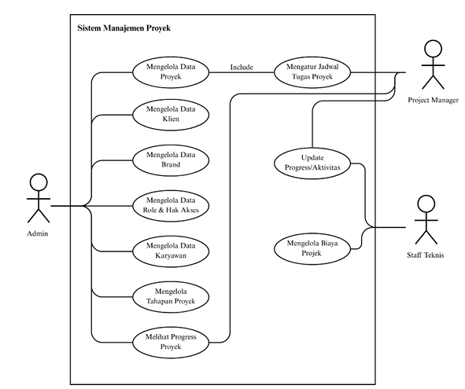
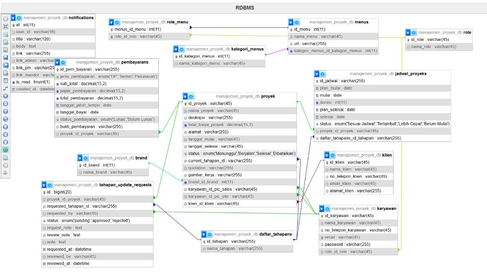
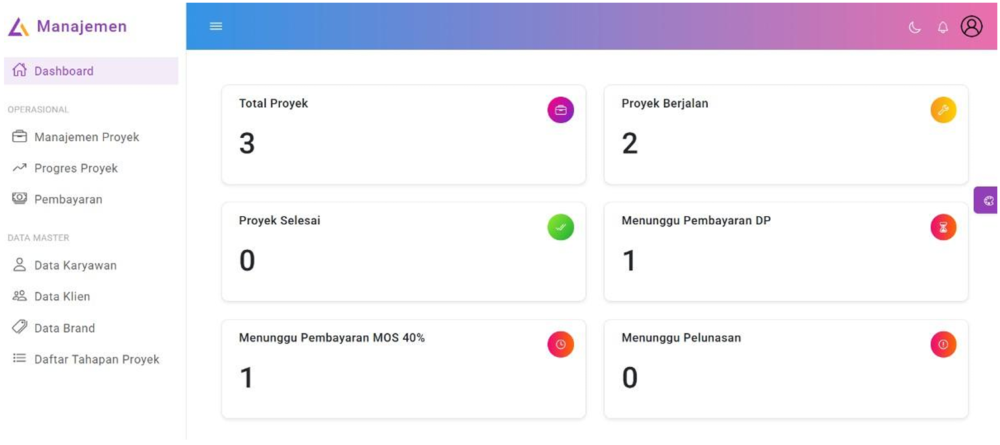

Construction Project Management Information System
A web-based Project Management Information System (PMIS) developed for CV. Graha Raya Consultant to improve project monitoring, scheduling, reporting, and document management in construction consultancy operations.

Problem Statement
CV. Graha Raya Consultant handled multiple construction projects simultaneously, but project management activities were still performed manually using spreadsheets, folders, and communication applications.
This condition caused document duplication, inconsistent data versions, reporting delays, and difficulties in tracking project changes, which reduced overall project management efficiency.


Proposed Solution
The solution was designed as a centralized web-based Project Management Information System capable of integrating project data, schedules, reports, stakeholders, and document management into a single digital platform.
System Features
Main modules include project management, milestone scheduling, work package management, daily progress reporting, cost tracking, document version control, risk logs, notifications, and audit trails.
Development Methodology
The system was developed using the Prototyping Model, which emphasizes iterative development and direct user feedback during system design and implementation.
Development Process
The development stages consisted of communication, quick design, prototype development, customer evaluation, and refinement & implementation to ensure the system met real operational requirements.

Technologies Used
Technologies and frameworks used in the system development.
PHP Native
MySQL
Bootstrap
Figma
Expected Impact
The implementation of this system is expected to improve transparency, project coordination, reporting efficiency, and document consistency while strengthening project accountability and digital transformation in construction consultancy operations.